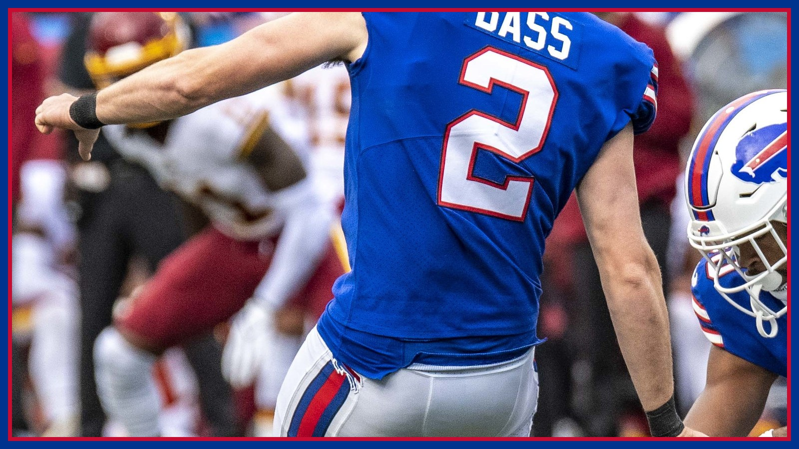

Buffalo Bills are 10-1: Tyler Bass hits a 57-yard walkoff to beat the Kansas City Chiefs 13-10 on Thanksgiving night
Tyler Bass hit a 57-yard field goal as time expired to give the Buffalo Bills a 13-10 Thanksgiving night win over the Kansas City Chiefs, per Reuters and AP. James Cook ran for 117 yards and tied Terry Allen's all-time record with his 10th straight game of 75+ rushing yards and a touchdown, per AP, and Buffalo's defense held Patrick Mahomes to 174 yards and no touchdown passes to reach 10-1 for the first time since 1991.

Tyler Bass found a patch of ground that was not torn up, put his head down, and made the kick of his life. Bass drilled a 57-yard field goal as time expired to give the Buffalo Bills a 13-10 win over the Kansas City Chiefs on Thanksgiving night at Highmark Stadium, per Reuters and the Associated Press — a walkoff in heavy rain, in the first Thanksgiving home game in Bills history, that sends Buffalo to 10-1 for the first time since 1991, per the Bills' official recap. It was not pretty. It was not supposed to be, in 34-degree rain with wind gusts up to 35 mph that made it feel like 23, per AP. Buffalo won its seventh straight game anyway, and it won it with its defense, its running back and its kicker — on a night when its quarterback played one of the worst games of his career and said so himself.
"I have to be better. I need to be better. I will be better," Josh Allen said, per AP. Allen finished 10 of 21 for 81 yards with two interceptions, both inside Kansas City's 20, per AP — the first, intended for Dawson Knox, was intercepted in the end zone by Alohi Gilman after a tip, and the second glanced off Khalil Shakir's hands into the arms of Nohl Williams, per the Bills' official recap and AP. Allen added 43 rushing yards on seven carries, per the official box score reporting. Head coach Joe Brady did not hide from what that means, per AP: "If we can win football games when our best player isn't having to be Superman, it's going to only pay dividends as we go because we know what Josh Allen's capable of being. I'm proud of that locker room." Allen's own list was longer, per AP: "Thankful for my team. Thankful for my defense. Thankful for my kicker. Thankful for James Cook and our O-linemen. This took a lot of people."
Cook was the offense. He carried 32 times — tied for his career high — for 117 yards and Buffalo's only touchdown, a 5-yard run 28 seconds into the second quarter, per Reuters and the Bills' official recap, and his total was the most rushing yards any player has had against Kansas City this season, per the Bills. The milestone underneath it is the one this site has tracked for three weeks: Cook joined Washington's Terry Allen as the only players in NFL history to rush for at least 75 yards and a rushing touchdown in 10 consecutive games, per AP's milestones — Allen's streak spanned the 1995 and 1996 seasons, and Cook has now matched it inside a single season. On a night when Buffalo ran the ball 43 times and held it for nearly 37 minutes, per the team recap reporting, Cook shortening the game was the plan, the protection for a banged-up secondary, and the reason Mahomes spent so much of the night standing in the rain watching.
The defense passed the test Film Room set for it on Tuesday. Buffalo had allowed no touchdown in 15 straight quarters against a run of backup quarterbacks, and the honest question was what happened against Patrick Mahomes, who arrived with 13 touchdown passes and no interceptions in his last four games. The answer: Kansas City finished with 241 total yards and 10 points, went 2 of 11 on third down, and punted five times with five three-and-outs, per AP and the Democrat and Chronicle's report card. Mahomes finished 16 of 29 for 174 yards with no touchdowns, per AP. Buffalo did allow its first touchdown in four outings — Emmett Johnson's 1-yard run in the third quarter, the first end-zone trip allowed since Derrick Henry's 2-yard run on Nov. 1, per AP — and Johnson finished with 72 rushing yards starting in place of the ruled-out Kenneth Walker III, per AP. One touchdown in four games, against Mahomes, is not a streak ending. It is a streak graduating. Brady put the four-game line plainly, per AP: the defense has allowed a combined two touchdowns and 47 points in its past four outings, and "our defense is playing outstanding." Greg Rousseau added his 11th sack of the season to force a fourth-quarter punt, per the Bills' official recap.
The secondary did it without Christian Benford, who was out, and the Democrat and Chronicle's report card graded how: Maxwell Hairston shut out Xavier Worthy on 13 coverage snaps, Davison Igbinosun held Rashee Rice to one catch for nine yards on 11 snaps, Kansas City's wide receivers caught just five passes for 56 yards total, and a late Rice catch that would have moved the chains was wiped out after Amani Hooker crushed Rice on Kansas City's second-to-last possession, per the same report card. Defensive coordinator Jim Leonhard's unit gave up yards in the middle of the field to Travis Kelce — four catches for 71 yards, and Kelce became the fourth player in NFL history to reach 1,300 career receptions, per AP — but it did not break, it did not allow Mahomes a touchdown pass, and with the game tied and Kansas City holding the ball twice inside the final two minutes, it forced the sequence that won the game.
That sequence belongs to special teams as much as to Bass. Bass had already tied the game at 10-10 with a 54-yard field goal early in the fourth quarter, per Reuters, and per the Bills he is the first kicker in NFL history with a game-tying and a game-winning field goal of 54 or more yards in the fourth quarter of the same game. Kansas City's Harrison Butker missed a potential go-ahead 46-yarder wide right with about six minutes left, per AP. Then, with Kansas City backed up at its own 11 and 15 seconds left, Mahomes fumbled a snap, the Chiefs went three-and-out, Matt Araiza's punt was partially tipped by Joe Andreessen, and Greg Dortch returned the line drive 17 yards to Kansas City's 39 with four seconds remaining, per AP and the Bills' official recap. Bass came on at the Bills logo at midfield, on a soggy, pock-marked field, per AP: "I just kind of saw a spot that somewhat looked pretty good. Just kind of made sure the footing was okay, and after that, just let it ride." Rookie punter Tommy Doman's last two punts had pinned Kansas City at its own 9 and its own 11 in the final minutes, per the Democrat and Chronicle — field position built the walkoff before Bass kicked it.
The standings math is why this ugly win is a beautiful one. Buffalo is 10-1, alone atop the AFC, with seven straight wins, per AP, and Brady became the fifth first-year head coach in NFL history to win at least 10 of his first 11 games, and the first since Jim Caldwell's 11-0 start with Indianapolis in 2009, per AP. Buffalo improved to 6-1 in regular-season meetings with Kansas City since 2020, including six straight wins, per AP — while Kansas City still holds the 4-0 playoff edge that hangs over every one of these meetings until Buffalo changes it in January. Winning the No. 1 seed is how a rematch runs through Orchard Park instead of Arrowhead, and Thursday night was the biggest single step toward that: Kansas City falls to 8-3, per AP. Next up, Buffalo is at New England on Sunday, Dec. 6, per AP, with a mini-bye to heal Benford and the rest of a long injury list and to fix a passing game that produced 81 yards. Enjoy this one, Bills Mafia — 10-1, a walkoff over Mahomes on Thanksgiving night, and a defense that just proved it was real. Go Bills — and get the full Chiefs fallout and the Patriots week ahead in your inbox with The BNC Blitz.